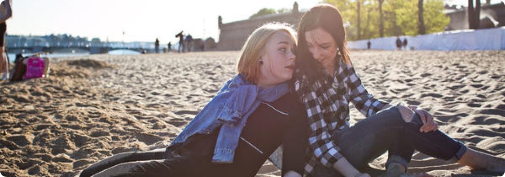

Наставники.про – цифровая информационная платформа огрганизации «Старшие Братья Старшие Сестры». Созданная для поддержки наставников программы.
История Марины и Алины
выбор наставника
Сплав на байдарках в две строки
усадьба Архангельское в две строки
 перейти на сайтДевока, 10 лет. Активный отдых
Аннотация статьи в несколько абзацев. В тот момент, как ребёнок научился говорить, и не одно слово, а задавать бесконечное количество вопросов, жизнь меняется. Вы будете не понимать друг друга, потом понимать чуть лучше и, Аннотация статьи в несколько абзацев. В тот момент, как ребёнок научился говорить, и не одно слово, а задавать бесконечное количество вопросов, жизнь меняется. Вы будете не понимать друг друга, потом понимать чуть лучше и,
Аннотация статьи в несколько абзацев. В тот момент, как ребёнок научился говорить, и не одно слово, а задавать бесконечное количество вопросов, жизнь меняется. Вы будете не по Аннотация статьи в несколько абзацев. В тот момент, как ребёнок научился говорить, и не одно слово, а задавать бесконечное количество вопросов, жизнь меняется
Развитие детей-сирот отличается от развития детей, живущих в семьях. Все этапы развития у детей-сирот проходят с искажениями и имеют ряд негативных особенностей.
читать статьюВидео
Видео
Видео
Видео
Я боюсь, что ребёнок ко мне слишком сильно привяжется. Что делать?
рубрика
Я боюсь, что ребёнок ко мне слишком сильно привяжется. Что делать?
рубрика
Я боюсь, что ребёнок ко мне слишком сильно привяжется. Что делать?
рубрика
У таких детей возникает ощущение отверженности. Оно приводит к напряженности и недоверию к людям и, как итог, к реальному неприятию себя и окружающих.
читать статью